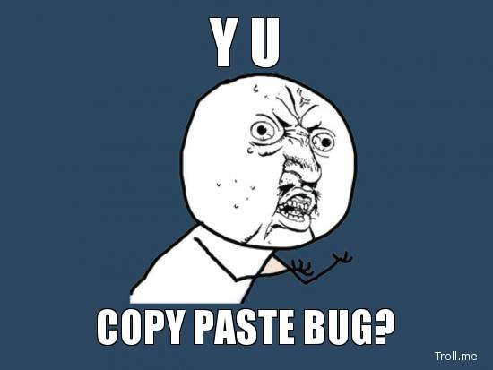

Duplication is your worst enemy as a developer. Developers in production environments understand that almost all software development work involves maintaining, extending and enhancing previous work. The presences of duplicates makes this much more hard and error-prone than it needs to be. Duplication is not restricted to code – it in also seen frequently in CSS, database schemas, and configuration information.
In this boot camp, you will get to recognise duplication in its various forms and figure out ways to refactor duplication. The DRY principle (Don't Repeat Yourself) is an obvious yet invaluable piece of advice that takes you a long way towards writing well-designed, simple and reliable code.
Difficulty level: Beginner
Pre-requisites: This boot camp can only be attempted in Python. Usage of an IDE like Eclipse/IntelliJ is optional but recommended.
This bootcamp is structured as follows: